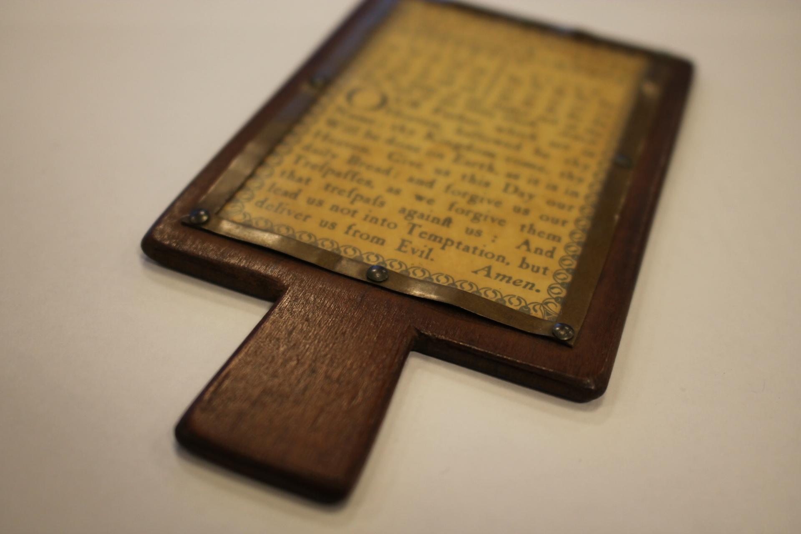
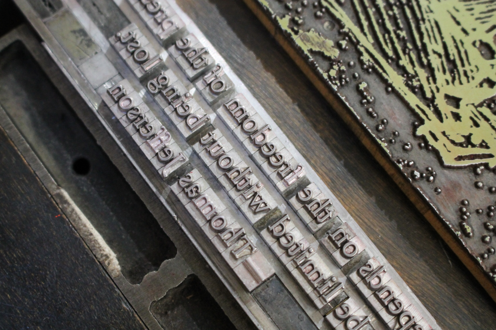
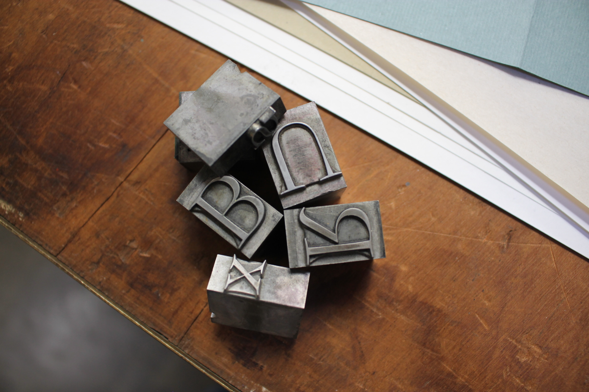
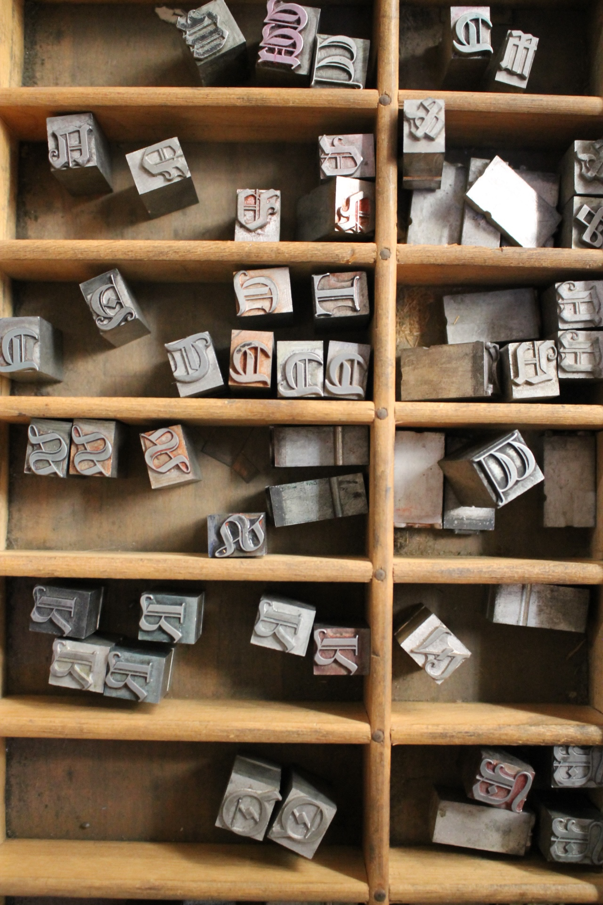
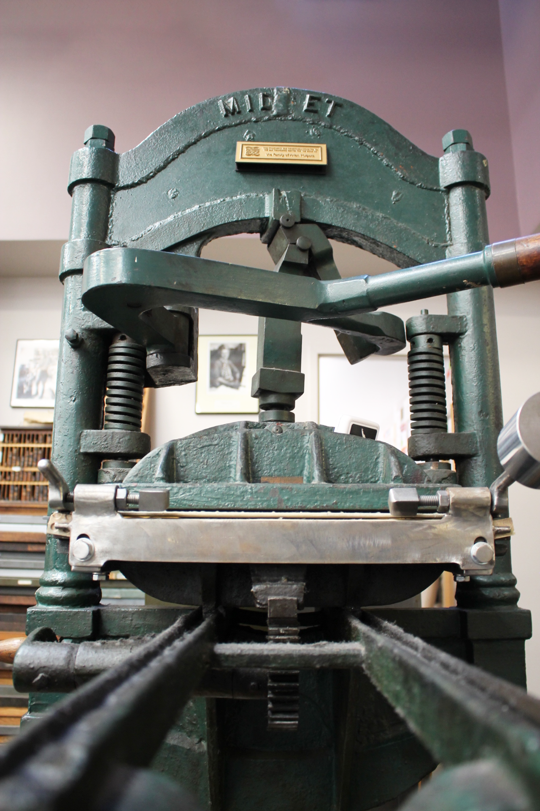
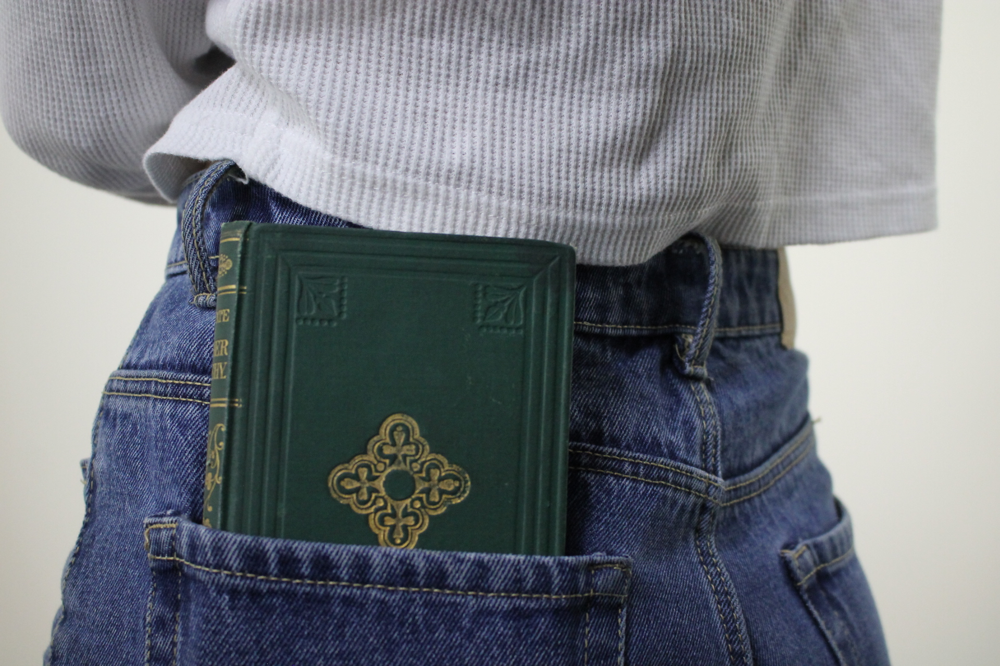

The Shape of the Book
The Shape of the Book is a re-design of a chapter from A History of Reading by Alberto Manguel that discusses the history and craft of bookmaking. I created a booklet design of the title chapter featuring original photography. Modern styling juxtaposes the historic nature of the text and photographs. A type setting with a modern slab-serif font fits neatly into a grid structure with ample negative space and color blocking.
cover

pages 1-4

pages 3-6

pages 7-10

pages 13-16

pages 19-22
PHOTOGRAPHY
In the creation of this booklet, I visited the San Francisco Center for the Book, a non-profit organization that fosters the joy and artistry of books and bookmaking, to capture much of the imagery and learn about bookmaking. Some photographs feature historic bookmaking materials and machines from their print studio, including a vintage printing press and cases of wood and metal type. Other specimens, like the hornbook, were photographed at Gleeson Library in the Rare Books Collection.
Some photographs challenge the shape of a book, like the opening image featuring text printed directly onto a person's arms. This image symbolizes the handmade nature of bookmaking and accompanies the opening line of the book: "My hands, choosing a book to take to bed or to the reading desk, for the train or for a gift, consider the form as much as the content."

left: opening image right: hornbook


photographed at the San Francisco Center for the Book


photographed at the San Francisco Center for the Book

photographed at Gleeson Library
cover image, created and photographed at the San Francisco Center for the Book